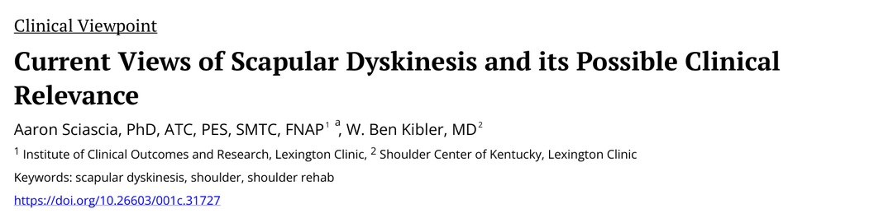
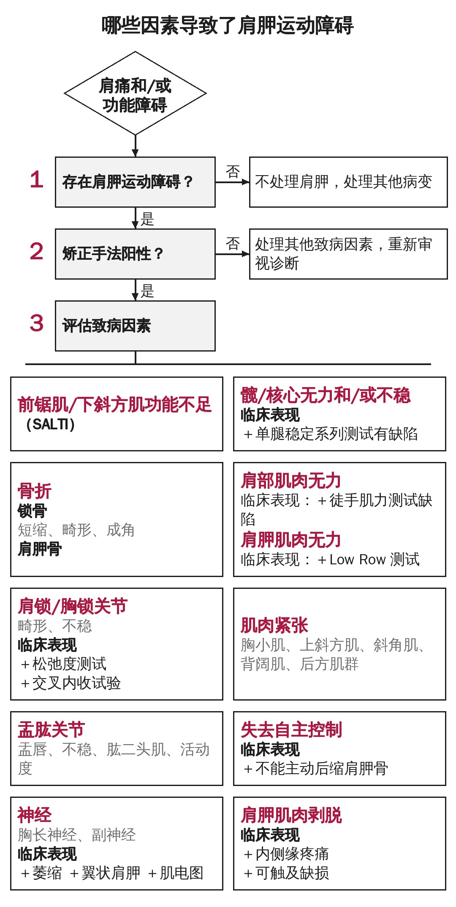
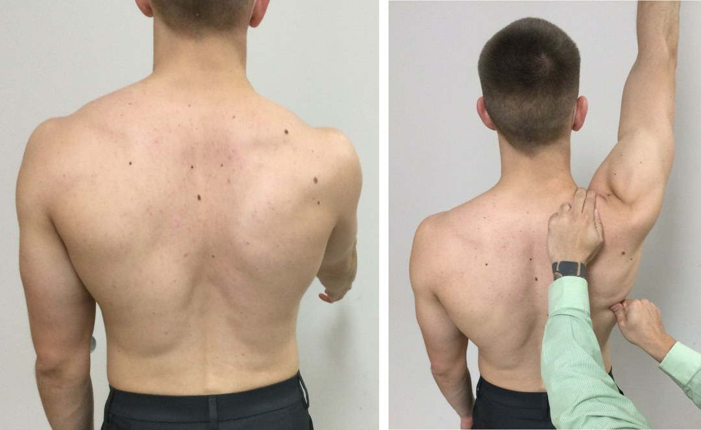
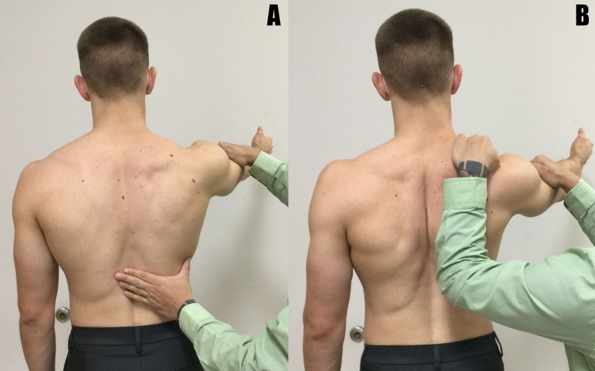
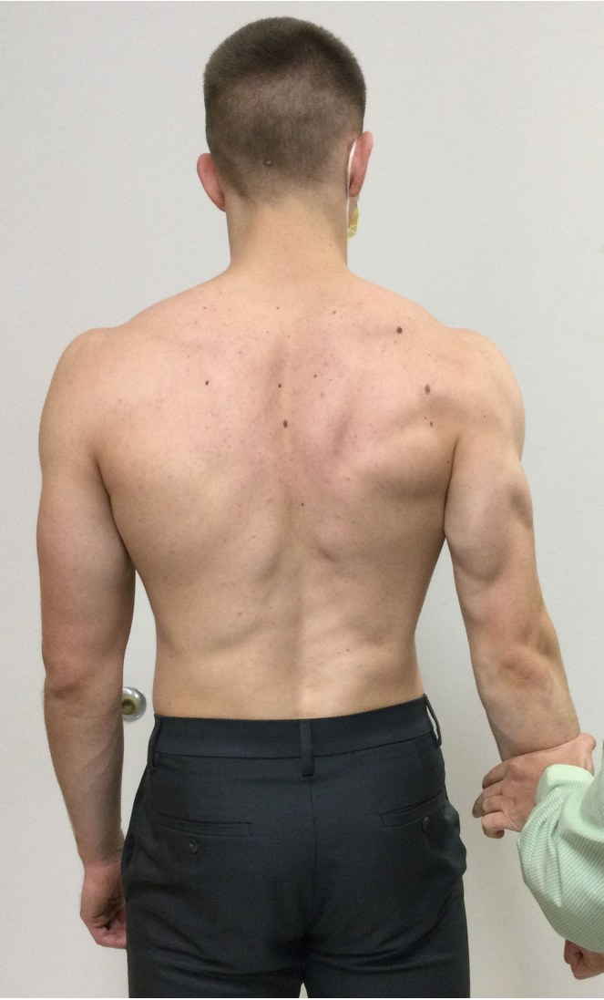
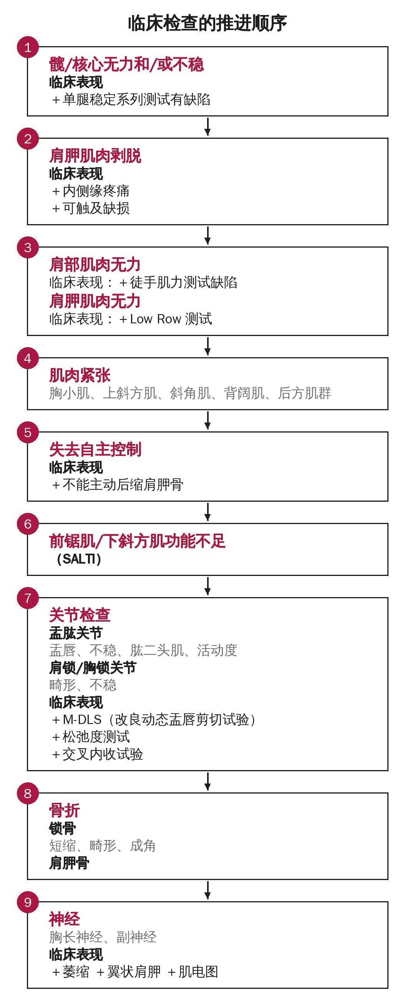
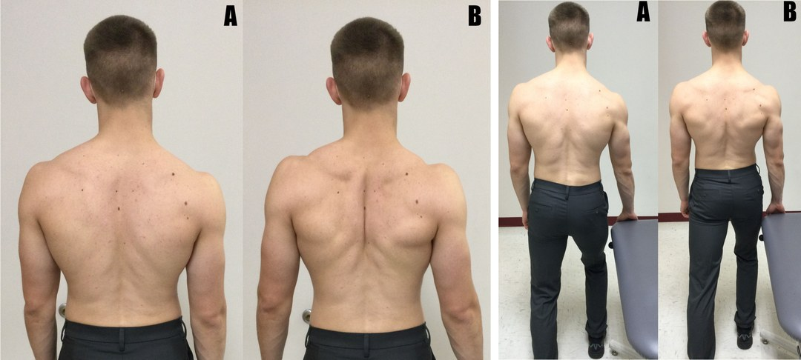
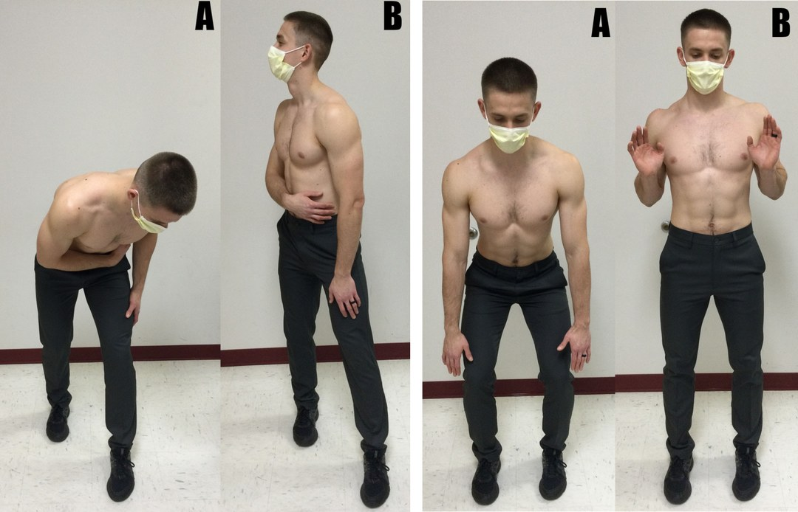
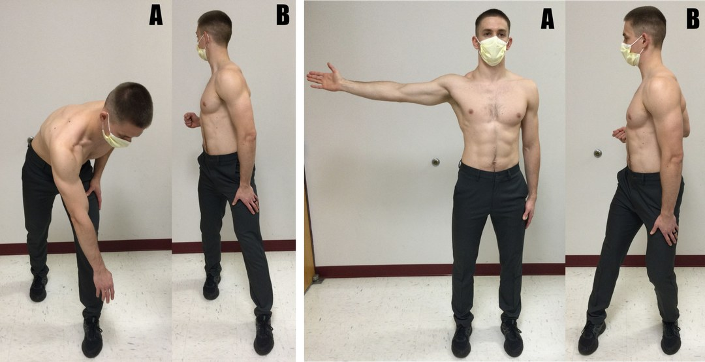

🔖原文首页（IJSPT 2022 年第 17 卷第 2 期）
📚 文献卡片
▪ 英文原题：Current Views of Scapular Dyskinesis and its Possible Clinical Relevance（肩胛运动障碍的现代观点及其可能的临床意义）
▪ 作者：Aaron Sciascia, PhD, ATC · W. Ben Kibler, MD
▪ 机构：Lexington Clinic 临床结局研究所 · 肯塔基肩关节中心
▪ 期刊：International Journal of Sports Physical Therapy（IJSPT）
▪ 年卷期：2022;17(2):117-130
▪ PMCID：PMC8805107
▪ 文章类型：临床观点（Clinical Viewpoint）
▪ 证据级别：原文未标注（属于专家观点）
▪ 关键词：scapular dyskinesis · shoulder · shoulder rehab
"Too often it is viewed as a diagnosis which is not accurate because it is a physical impairment."
"肩胛运动障碍经常被当作一种诊断，这并不准确，因为它是一种身体功能损害。"
正因为这种错误归类，文献里对肩胛运动障碍的临床意义既有支持也有反对，至今没有清晰的评估和治疗建议。作者认为原因主要有三：
• 自由度多：附着在肩胛骨上的肌肉很多，同一个动作不同人的完成方式差异很大
• 胸廓是椭圆形的：肩胛骨不可能只在单一平面运动，而是旋转和平移的复合运动
• 角色多：肩胛骨是盂肱关节“凹-压”稳定的“G”、肩锁关节稳定的“A”、肩肱节律的“S”，还是动力链中把躯干和下肢能量传到手臂的关键一环
术语小贴士：肩胛骨的旋转（前/后倾、上/下回旋、内/外旋）是附属运动；上提/下沉、内/外侧平移是生理运动。描述运动过程用“内侧/外侧平移”，描述运动结束后的位置才用“后缩/前伸”。
| 观点 | 含义 |
|---|---|
| ① 是损害，不是诊断 | 肩胛运动障碍有致病原因，需要找出原因 |
| ② 病理解剖不是重点 | 病理解剖要查，但不应是检查的主要焦点 |
| ③ 定性检查最实用 | 目前临床上最好用的，是判断肩胛是否参与肩部功能障碍的定性检查 |
| ④ 康复重运动控制 | 康复的首要目标是改善运动控制，而不是单纯增加力量 |
“Dys”（改变）＋“kinesis”（运动），泛指肩胛骨正常生理、力学和运动的控制丧失。临床表现包括：
• 内侧缘或内下缘突出
• 上举手臂时肩胛过早上提（耸肩）
• 放下手臂时肩胛快速下回旋
注意区分“翼状肩胛”：这个词最好留给神经损伤导致的肩胛异常——手臂一开始动，肩胛某部分就明显离开胸壁，且整个上举和下降过程都不贴合。而运动障碍更多在手臂下降阶段才看得出来。
肩胛运动障碍与肩部损伤之间的因果关系，目前还没有确立。
83% 的肩痛患者就诊，是因为无法完成重要的日常或运动功能。作者把功能看成：解剖 × 生理 → 力学 → 完成任务；功能障碍就是病理解剖、病理生理、病理力学的不同组合。
系统综述常批评肩胛检查的“诊断准确性”不足。但作者指出：运动障碍不是诊断，而是损害，本来就没有可以对照的金标准。三维运动分析靠体表标记，只是骨骼位置的替代；骨钉研究最准确，却是有创的，无法用于临床。所以定性评估仍是目前最好的临床工具。

🔖图1：肩胛参与情况评估流程（已译为中文重绘）
• 患者双臂前屈上举到最大，再放下，重复 3～5 次
• 看不清时，可以每只手拿 3～5 磅哑铃，或重复到 10 次，放大异常
• 重点看下降阶段，记录症状侧内侧缘是否突出：“是”或“否”
三项肩胛肌力测试（看肩胛是否被“打破”位置）：
| 测试 | 目标肌肉 |
|---|---|
| 手臂前屈 130° 徒手抗阻 | 前锯肌 |
| 手臂外展 130°～150° 徒手抗阻 | 中、下斜方肌 |
| 手臂在体侧后伸 | 菱形肌 |
与普通肌力测试不同，这里检查者要试图“打破”患者手臂的位置，同时观察肩胛是否明显移位；两者同时出现提示肩胛肌无力。
| 矫正手法 | 操作 | 阳性 | 提示 |
|---|---|---|---|
| 肩胛辅助试验 | 患者上举手臂时，检查者在肩胛下角内侧施力，辅助肩胛上回旋和后倾 | 疼痛弧缓解，活动范围增加 | 肩胛运动异常与疼痛有关 |
| 肩胛后缩试验 | 先常规测前屈肌力；再把肩胛内侧缘固定在后缩位，重测 | 后缩固定后力量增加 | 肩胛参与肩袖力量不足 |
| Low Row 试验 | 手臂轻度后伸，检查者向前施力，患者抵抗；再让患者收缩臀肌后重测 | 收缩臀肌后力量增加 | 康复应加入下肢/核心训练 |

🔖图3（左）：肩胛运动障碍测试，患者双臂上举 3～5 次，检查者观察肩胛运动；图4（右）：肩胛辅助试验，一手稳定肩胛，另一手“辅助”肩胛沿正确平面运动

🔖图5：肩胛后缩试验。a）先做常规前屈徒手肌力测试；b）检查者固定肩胛内侧缘后重复测试

🔖图6：Low Row 试验。检查者徒手抵抗手臂后伸，先不收缩、再收缩臀肌，比较两次力量
矫正手法阳性，说明康复应先关注肩胛活动度、肩胛力量或核心力量，而不是一上来就练肩袖。

🔖图2：临床检查的推进顺序（已译为中文重绘）
作者所在机构对 462 例连续就诊、满足前两步标准的肩痛患者做了全面检查（未发表数据）：
| 类型 | 比例 | 举例 |
|---|---|---|
| 病理解剖原因 | 34.7% | 锁骨骨折、肩锁关节病变、盂肱关节内紊乱、神经损伤、肩胛周围肌肉损伤 |
| 病理生理原因 | 65.3% | 肌肉失衡、抑制、紧张/柔韧性差、前锯肌/下斜方肌功能不足 |
所以评估分两条路：病理解剖型（约 1/3）可能需要手术恢复解剖；病理生理型（约 2/3）需要全面评估肌肉功能，作为治疗依据。部分病理解剖型患者也同时存在原发或继发的病理生理问题。
这种思路与近年提出的基于运动损害（而非病理解剖）的分类系统一致：先识别可见的异常（如内侧缘突出、肩胛体位置），再同时思考原因（活动度、力量、运动控制不足，或明确的解剖损伤）。
过去治疗聚焦于提高活动度和力量，但很多研究发现，手法治疗和运动训练对肩胛运动本身影响很小。可能的原因：
投掷运动员投球后盂肱旋转会急性减少，但无论干预与否，24～96 小时内平均都能恢复。慢性活动度受限往往伴有骨性适应、关节囊增厚和肌腱改变。手法治疗后的即时活动度增加不能持久，更可能是内源性镇痛带来的疼痛调节，而不是组织真的被“矫正”了。
• 常被误读为“某个动作只激活某块肌肉”，忽视了肌肉激活的叠加效应
• 基础研究多在无症状人群中完成
• 动作多是孤立的、在站立或俯卧/仰卧的静止体位下完成，可能强化低效或错误的运动模式
因此，只关注增加力量，可能不是最理想的干预。
大多数上肢任务依靠视觉反馈来定位和纠错，但肩胛骨在背后，看不见，这可能就是运动障碍的来源之一。研究显示：
• 有意识矫正：在上举或旋转手臂前先主动摆正肩胛，可以提高肩胛肌激活、改善肩胛运动学
• 视觉、听觉、动觉反馈都能积极影响肩胛肌激活和位置
• 整合动力链：坐位或站立位训练，用下肢和躯干带动肩胛和肩部的运动和肌肉激活
不过，目前还没有随机对照试验比较“运动控制/动力链”方案与传统方案，相关建议都来自专家意见和共识。
五个临床要点：
| 要点 | 说明 |
|---|---|
| ① 短力臂进阶 | 先从手臂贴近身体的动作开始 |
| ② 坐位、站立优先 | 优于俯卧或仰卧练习 |
| ③ 按顺序处理损害 | 活动度 → 运动控制 → 力量（必要时）→ 耐力 |
| ④ 长力臂放到后期 | 手臂上举或外展 90° 的动作留到康复后期 |
| ⑤ 出院前做增强式训练 | 临近结束时进阶到增强式动作 |
从有意识矫正和Low Row 练习开始，用髋和躯干伸展带动肩胛后缩。前 4～6 周避免耸肩、肩胛上提类动作，以免过度偏向上斜方肌、延迟肩胛肌群的平衡。

🔖图7（左）：有意识矫正肩胛，站立位（a），主动“把肩胛骨夹在一起”（b），可借助镜子或手机看到肩胛位置；图8（右）：Low Row 练习，站立、膝微屈（a），伸髋和躯干带动肩胛后缩（b）
前面的动作能完成且不加重症状后，加入更动态的短力臂动作。

🔖图9（左）：手臂贴身的“割草机”，手臂像吊着吊带一样贴近身体（a），伸髋、伸躯干后转体，带动肩胛内侧平移和后缩（b）；图10（右）：“抢劫者”练习，口令“把手肘放进后裤兜”，从躯干和髋微屈（a）到伸展（b）

🔖图11（左）：手臂离开身体的“割草机”，起始时手臂轻度前屈（a），同样伸髋并转体（b）；图12（右）：“击剑”练习，手臂在额状面上举 90°（a），侧跨步的同时后缩肩胛、内收手臂（b）
只有前面的动作都掌握、几乎不引起症状后，才在康复后期加入。
| 要素 | 建议 |
|---|---|
| 起始剂量 | 1～2 组 × 5～10 次，不加外部阻力 |
| 加量 | 根据症状和耐受加组数、次数 |
| 加阻力的前提 | 能完成 5～6 组 × 10 次且症状不加重 |
| 阻力顺序 | 先轻哑铃（最多 2～3 磅，约 1～1.4 kg）→ 再弹力带 |
| 为什么哑铃在前 | 哑铃更稳定；弹力带患者使用时变异大，尤其手臂位置变化时；用弹力带时可用主观用力程度量表监控 |
| 反馈 | 视觉、听觉、动觉反馈都可以；但反馈过多不利于学习，患者会依赖外部信息 |
• 专家观点：临床观点类文章，未标注证据级别，作者均来自同一个肩胛研究团队
• 关键数据未发表：34.7%/65.3% 的病因构成来自作者机构未发表的调查，无法核查
• 缺乏对照研究：作者也承认，运动控制/动力链方案目前没有与传统力量方案对比的随机对照试验
• 定性检查的主观性：肩胛运动障碍测试和矫正手法依赖检查者经验，信度受影响
• 小瑕疵：原文有几处拼写错误（如“Cooresponding”“promienance”“aa comprehensive”），不影响理解
① 定位：肩胛运动障碍是损害，不是诊断，要找出原因
② 检查：运动障碍测试 → 矫正手法（辅助、后缩、Low Row）→ 逐步排查致病因素
③ 病因：约 1/3 病理解剖，约 2/3 病理生理
④ 治疗：重运动控制，借助有意识矫正、反馈和动力链
⑤ 进阶：短力臂 → 动态短力臂 → 30°～45° → 90° 长力臂 → 增强式
⑥ 剂量：先徒手 5～6 组 × 10 次无症状，再加 2～3 磅哑铃，最后弹力带
欢迎关注骨科康复小黄公众号，获取更多物理治疗的专业知识！
📄参考文献：
Sciascia A, Kibler WB. Current Views of Scapular Dyskinesis and its Possible Clinical Relevance. Int J Sports Phys Ther. 2022;17(2):117-130. PMCID: PMC8805107.
文中图片均来自原文，图 1、图 2 已译为中文重绘，仅用于学术交流。